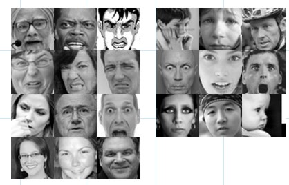

Our goal was to create a convolutional neural network that can learn to detect the 7 basic emotions based on images of facial
expressions. These emotions are anger, disgust, fear, hapiness, sadness, surprise and neutral.
Convolutional neural networks are widely used in image classification tasks such as street sign recognition,
plant recognition, as well as large scale object detection and categorization and many other types of image
classification tasks.
We were interested to see whether or not convolutional neural networks are able to distinguish between
facial expressions and if so, what topology would best suite this type of classification task.
Problem description
Dataset
For our dataset we found a kaggle competition which was held in 2013 and provided a fully labeled dataset.
The dataset consists of three separate sets of data. One for training which consists of around 28000 images
each image belonging to one of the 7 classes. One validation set and one test set both of which contained
around 4000 images. The images are grayscale and their size is 48x48 pixels.

Fig.1 - A sample taken from the dataset (3 images per class)
Experiments
We used keras with a tensorflow backend to create, train and test our models.
We decided to create a small CNN just to see how it behaves given the training data. Our first model consisted of two convolution layers with a filter size of 16 and 32, relu as the activation function, each of them followed by max pooling with a stride of shape (2, 2). The output of the convolution layers are then fed into a single fully-connected layer with a softmax activation to produce the class probabilities.
Fig.2 - The initial model we used to get a feel for the data
This model wasn't able to converge and capped at around 40% average accuracy. After this we decided to progressively try adding more layers and increasing filter sizes. At this point our goal was to find a model which could be overfitted to the training data. During this process the validation accuracy was consistently lower than the training accuracy. The validation accuracy ranged from around 35% to 45%.
The next step was trying out different techniques to reduce overfitting and improve generalization. We tried using dropout, batch normalization and l2 regularization. The original dataset was provided in a csv format, which we decided to convert to actual images. This made it possible to use keras libraries for augmentation.
After a training a model which consisted of the above mentioned elements and reaching a validation accuracy of 60% (at this point the model capped for some reason), we decided to freeze the convolutional layers and continue training the fully-connected layers only. This yielded a validation accuracy of around 65%.
Initial weight initializations were done using variance scaling. We used adam as the optimizer during training.
We decided to create a small CNN just to see how it behaves given the training data. Our first model consisted of two convolution layers with a filter size of 16 and 32, relu as the activation function, each of them followed by max pooling with a stride of shape (2, 2). The output of the convolution layers are then fed into a single fully-connected layer with a softmax activation to produce the class probabilities.
2X
→
CONV
→
RELU
→
MAX POOL
DENSE
→
SOFT MAX
This model wasn't able to converge and capped at around 40% average accuracy. After this we decided to progressively try adding more layers and increasing filter sizes. At this point our goal was to find a model which could be overfitted to the training data. During this process the validation accuracy was consistently lower than the training accuracy. The validation accuracy ranged from around 35% to 45%.
The next step was trying out different techniques to reduce overfitting and improve generalization. We tried using dropout, batch normalization and l2 regularization. The original dataset was provided in a csv format, which we decided to convert to actual images. This made it possible to use keras libraries for augmentation.
After a training a model which consisted of the above mentioned elements and reaching a validation accuracy of 60% (at this point the model capped for some reason), we decided to freeze the convolutional layers and continue training the fully-connected layers only. This yielded a validation accuracy of around 65%.
Initial weight initializations were done using variance scaling. We used adam as the optimizer during training.
Final model
The topology of our final model looks like this:
Fig.3 - The final model we came up with
CONV
→
RELU
→
MAX POOL
→
3x
→
CONV
→
BATCH NORM
→
RELU
→
MAX POOL
5x
→
DENSE
→
RELU
DENSE
→
SOFT MAX
Final results
The test accuracy of the final model was around 65%. We decided to generate a per class classification report
to see which classes were hard to differentiate.
Per class classification:
Table 1 - Per class mean accuracy
| Anger | Disgust | Fear | Happiness | Sadness | Surprise | Neutral |
| 58% | 50% | 46% | 85% | 50% | 78% | 62% |
Conclusion
The best model in the kaggle competition yielded an accuracy of 70%, while our results matched most of the
top contestants' results ranging from 60% to 65% accuracy. We conclude that facial emotion recognition using
CNNs is a non trivial classification task and probably requires more sophisticated hyper parameter optimisation
and other methods which could improve the accuracy of the model.
This was a fun project to implement and we look forward to trying out other methods for solving this problem in the future.
This was a fun project to implement and we look forward to trying out other methods for solving this problem in the future.